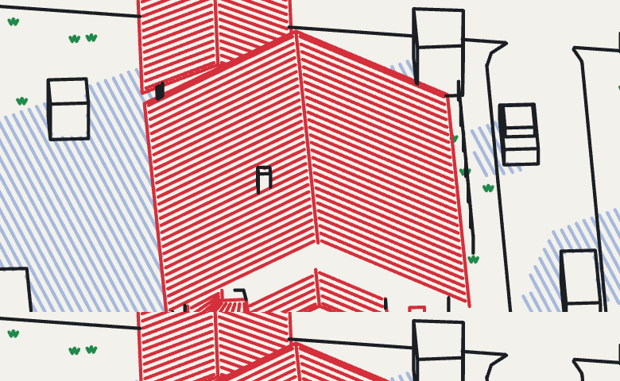
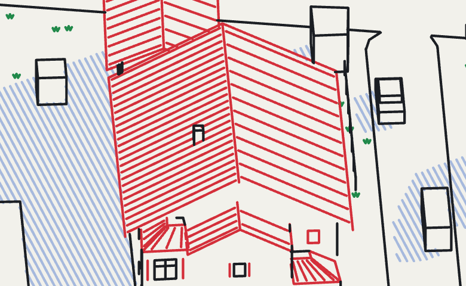
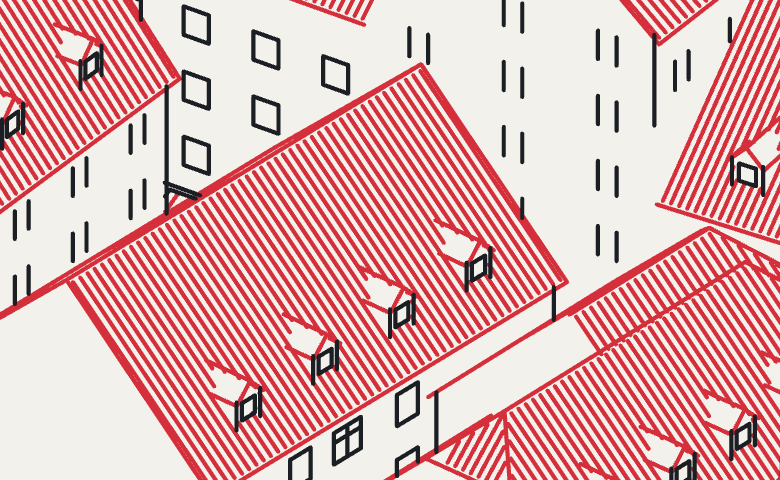
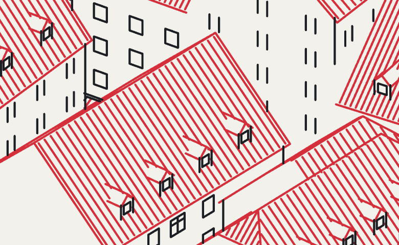

Withdrawn after visual feedback. The contrast between roof sides was too strong, and the open hatching exposed apparent gaps in roof outlines. The previous uniform 0.7 mm hatch spacing has been restored. The images and measurements below document the rejected experiment, not the current renderer. Outline strokes were unchanged by this experiment; the apparent gaps need a separate geometry and visibility investigation. Passing tests and lower ink usage did not make this an acceptable artistic result.
15 November 2026 · Original review · Round 16
Roof hatching now gives each face one of three tones using the existing sun direction and elevation. Sunlit slopes have open spacing, oblique slopes a middle tone, and slopes turned away from the sun a stronger tone. This makes adjacent planes easier to distinguish and gives dormers and ridges more room.
The reference spacings are 1.6, 1.15 and 0.85 mm, compared with the previous uniform 0.7 mm. They retain the existing Detail and pen-width scaling, perpendicular projected spacing, endpoint clearance and minimum-length rules. Flat skirt-roof tops use the same lighting calculation. Roof geometry, outlines and cast shadows are unchanged.




Mollis, Nördlingen and Rye at 1:500 and 1:1000, Detail 1, 0.35 mm pen, optional OSM tags off. Estimated plotting time falls by roughly 6–16%. These are plotting estimates, not artistic scores.
| Sheet | Waste before → after | Estimated time change |
|---|---|---|
| Mollis 1:500 | 4.0% → 3.3% | -9.4% |
| Mollis 1:1000 | 5.9% → 5.2% | -9.3% |
| Nördlingen 1:500 | 5.0% → 3.7% | -15.7% |
| Nördlingen 1:1000 | 6.2% → 5.1% | -12.1% |
| Rye 1:500 | 4.4% → 3.7% | -11.6% |
| Rye 1:1000 | 6.1% → 5.7% | -5.8% |
Before lab report · After lab report (local generated files)
Reviewed all twelve golden sheets, six LOD sheets and centre close-ups, plus enlarged before-and-after roof comparisons. Golden changes are confined to roof hatching and plot/SVG summaries; other feature totals, counts and census stay unchanged. Tests cover tonal ordering, projected spacing, unchanged geometry and outlines, and overhead sunlight with regular and broad pens. Build and all 592 tests pass.
No physical prints were inspected, nor every sun angle, seed, view or all 29 presets. The three discrete tones are an artistic simplification, not a simulation of reflected light or shadows cast onto roof faces. Small slopes may carry too few strokes to show every tonal distinction.